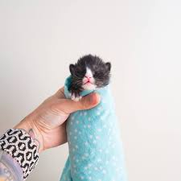
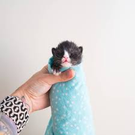
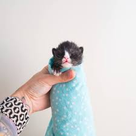

search:
About kittenxlady: Hannah Shaw is a kitten rescuer, humane educator, author, and unwavering animal advocate who has dedicated her life to finding innovative ways to protect animals. Her project, Kitten Lady, strives to create global change in the way we perceive and treat the tiniest and most vulnerable felines: orphan kittens. Kitten Lady provides educational media, training resources, and instructional workshops and consulting services that help individuals and animal shelters learn how to save the lives of kittens--in a fun and engaging format. Shaw is the author of the upcoming book Tiny But Mighty (Penguin Random House, 2019) and the upcoming children’s book Kitten Lady’s Big Book of Little Kittens (Simon and Schuster, 2019.) She has been featured as a guest expert on Animal Planet's My Cat From Hell, and her work has been profiled in People Magazine, Cosmopolitan, and other media outlets around the world. Shaw was awarded the 2017 Advocate of the Year award by CatCon Worldwide and the 2018 Advocacy Award by Kitten Rescue LA. She was named one San Diego City Beat’s “People of the Year” for 2018.
Current fosters:Flower,Peppermint,Basil,Sage,Mountaingem,Shining Sunbeam,Firecrown,Little Woodstar,Purple Crown Fairy, and Shyla
